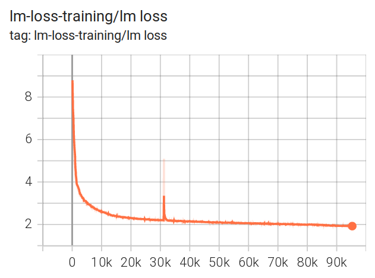
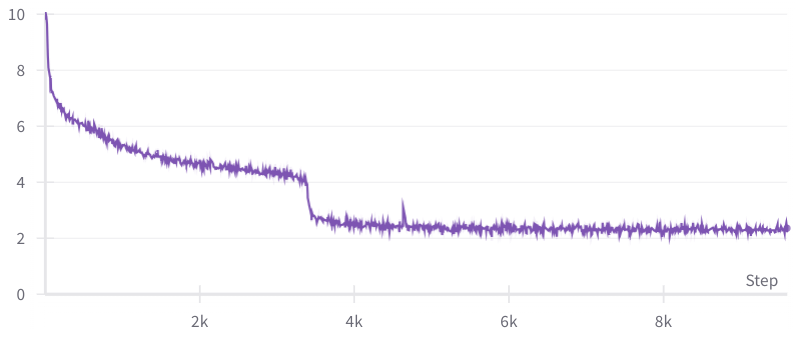
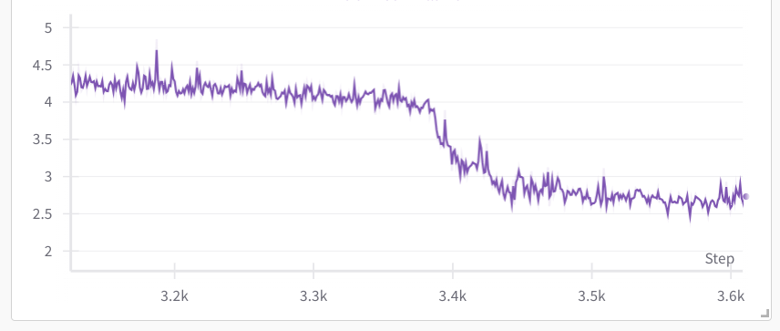
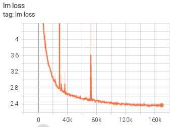
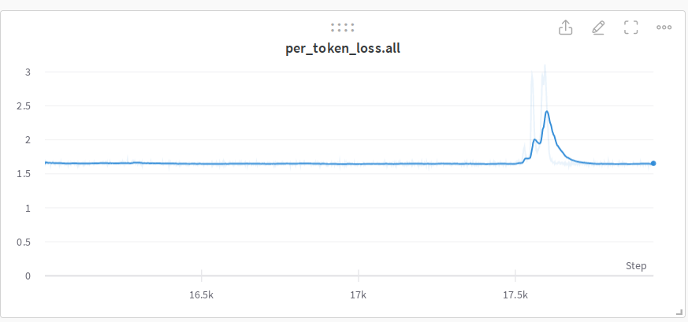
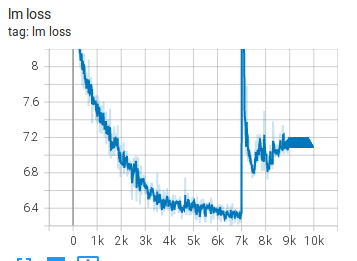
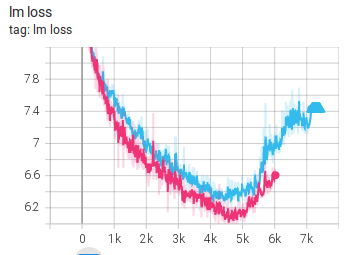

Training Stability: Hyperparameters, Instabilities and Reading Loss Curves
A large training run fails in two ways. The cluster can break, which the next chapter covers. The math can break: the loss spikes, drifts upward, or quietly reports a number that isn't true. This chapter is about the second kind. It covers how to pick the starting hyperparameters that most influence stability (batch-size ramp-up and initialization std), what is known about why large runs diverge (low-precision numerics, unlucky combinations of data and weights, Adam's epsilon), how teams recover, and then a gallery of real loss curves from 13B to 176B-parameter runs, with what each shape usually means and what to do about it.
Much of this material is experience rather than theory. Very often nobody knows exactly why a given spike happened. The useful skill is recognizing the pattern and knowing which remedy usually works. Where something is an educated guess, this chapter says so.
Prerequisites
- Training arithmetic: Numerics diagnostics is the mechanistic half of this chapter. It derives z-loss for output-logit growth, QK-norm for attention-logit growth and entropy collapse, and what to monitor cheaply so that you see a spike coming thousands of steps early. Those are not repeated here. This chapter is the empirical half: what the curves look like and what people did.
- Training arithmetic: Mixed precision internals for fp16 vs bf16 range, loss scaling and why fp16 overflows. Adam's epsilon is used in the Adam section below. Critical batch size and μP give the theory behind batch-size ramp-up and width-dependent init.
- Model parallelism derivations: pipeline parallelism and the bubble, ZeRO and FSDP, and the
mbs × chunks × dpbatch-size nesting. - Profiling and optimization for what TFLOPS-per-GPU numbers mean in practice and how they are measured.
- Transformer architectures: normalization (pre-LN, LayerNorm, RMSNorm) and ALiBi, both used below.
- Storage and data: deterministic, resumable data loading for samplers that save their position. The resume-related spikes section shows what happens when they don't.
Conventions. Blocks marked [ran] were executed on an Apple M4 laptop (Python 3.14, PyTorch 2.15.0, CPU) and the output shown is real. Everything at the scale of the loss-curve images is from real multi-hundred-GPU runs reported by the people who ran them; none of it was reproduced for this chapter. To run the demos:
python3 -m venv /tmp/stab-venv && /tmp/stab-venv/bin/pip install torch
mkdir -p /tmp/stab && cd /tmp/stab
cat ~/ml-engineering/training/*.md > data.bin # training text for init_spike.py: this book's own markdown
head -c 120 data.bin # look at it before you train on it
Where good hyperparameters come from
The easiest way to get a good starting set of hyperparameters and model init is to copy them from a similar training run that you know succeeded. Three sources, in order of usefulness:
- Public training logbooks. Some teams published the day-by-day chronicle of a large run: every crash, every divergence, every config change and why. The BigScience pre-BLOOM 104B experiments and BLOOM-176B, Meta's OPT-175B, THUDM's GLM-130B and Hugging Face's IDEFICS-80B all have one. The full list is in Further reading: public training logbooks. They are the best way to learn about instabilities because you see exactly what happened and how it was overcome; most of the loss curves in this chapter come from them.
- Papers and technical reports, if they disclose their hyperparameters. Recent reports increasingly have a section on infrastructure, scaling and engineering challenges that covers the same ground as a logbook.
- The authors. If a paper did not publish its hyperparameters, ask them.
Then scale them correctly. Learning rate and init std don't transfer unchanged across widths under standard parametrization; μP is the systematic fix, and the init-std formulas below are the simpler, older one.
Glossary
Training jargon uses many abbreviations. These are the ones this chapter uses:
| Term | Meaning |
|---|---|
| BS / MBS | Batch size per GPU, i.e. the micro-batch size: samples in one forward/backward on one GPU. |
| GAS | Gradient accumulation steps: how many forward/backward passes run before one optimizer step. In pipeline parallelism this is the number of micro-batches per step (PyTorch calls it chunks). |
| DP | Number of data-parallel replicas. |
| GBS | Global batch size: samples per optimizer step across the whole job, \text{GBS} = \text{MBS} \times \text{GAS} \times \text{DP}. |
| PP | Pipeline parallelism: the model's layers split into stages on different GPUs, see Pipeline parallelism. |
| TFLOPS | Trillion floating-point operations per second (FLOPS). Below, this is the achieved throughput per GPU, not the hardware peak. See MFU and HFU, properly. |
| init std | The standard deviation \sigma of the normal distribution \mathcal{N}(0, \sigma^2) that weight matrices are sampled from at initialization. |
| loss spike | A sudden rise in training loss over a few steps, followed by recovery, partial recovery, or divergence. |
| divergence | The loss rises and does not come back, often ending in inf/nan. |
For example, with MBS = 2, GAS = 128 and DP = 8, \text{GBS} = 2 \times 128 \times 8 = 2048 samples per optimizer step, which was BLOOM-176B's final batch size.
Global batch size ramp-up
If you intend to train with a very large GBS, say 1024, 2048 or more samples, it is wasteful to use it from step 0. At the start the model is random. It cannot benefit from a very precisely averaged gradient, because almost any direction downhill is a good one. A small batch gives an equally useful step for far fewer samples. The critical batch size section gives the theory: the gradient noise scale, which sets the batch size beyond which extra samples stop helping, is small early in training and grows as the loss falls. So to save data and compute, GBS is usually ramped up over the first part of training.
Don't start with a GBS that is too small either. Too little work per step makes the GPUs inefficient (low TFLOPS) and slows everything down. This is especially bad with pipeline parallelism, because the main thing to tune in PP is the bubble: the time pipeline stages sit idle while micro-batches fill and drain the pipeline. With p stages and m micro-batches per step, the 1F1B bubble fraction is (p-1)/(m+p-1) (derived here). With DP and MBS fixed, m = \text{GBS}/(\text{MBS} \times \text{DP}), so a smaller GBS means fewer micro-batches and a bigger idle fraction.
During BLOOM-176B training, which used PP, throughput benchmarking showed that starting at GBS = 16 was very slow (8 TFLOPS per GPU). The team started at GBS = 192 (73 TFLOPS) and ramped up to GBS = 2048 (150 TFLOPS). In Megatron-LM (NVIDIA's large-model training framework; BLOOM used its Megatron-DeepSpeed fork) this is one flag, --rampup-batch-size 192 16 9765625: start at 192, grow in increments of 16, and reach the final --global-batch-size after 9,765,625 samples in total.
The third number is easy to misread as "add 16 every 9,765,625 samples". It is the length of the whole ramp. Megatron's help text gives the example --rampup-batch-size 16 8 300000 --global-batch-size 1024: (1024-16)/8 = 126 increments, about 300000/126 \approx 2380 samples each. The script below reproduces the BLOOM schedule with that rule, and also shows why the throughput moved the way it did. BLOOM-176B ran on 384 GPUs as TP = 4 × PP = 12 × DP = 8 with MBS = 2 and sequence length 2048.
# gbs_ramp.py - Megatron-style GBS ramp-up (--rampup-batch-size START INCR SAMPLES) and the pipeline bubble it implies [ran]
start, incr, ramp_samples, gbs_final = 192, 16, 9_765_625, 2048 # BLOOM-176B
mbs, dp, pp, seqlen = 2, 8, 12, 2048 # BLOOM-176B layout: TP=4 x PP=12 x DP=8 = 384 GPUs
n_incr = (gbs_final - start) // incr # 116 increments
per_incr = ramp_samples / n_incr # samples spent at each GBS value
def gbs_at(consumed): # same rule as Megatron's RampupBatchsizeNumMicroBatches
return min(gbs_final, start + int(consumed / per_incr) * incr)
steps = samples = 0
while samples < ramp_samples:
samples += gbs_at(samples); steps += 1
print(f"{n_incr} increments of {incr}, {per_incr:,.0f} samples each; ramp = {ramp_samples:,} samples "
f"= {ramp_samples * seqlen / 1e9:.1f}B tokens, {steps:,} optimizer steps")
for gbs in (16, 192, 1024, 2048):
m = gbs // (mbs * dp) # micro-batches per pipeline per step
print(f"GBS {gbs:5d}: GAS = {m:4d} micro-batches, 1F1B bubble (pp-1)/(m+pp-1) = {(pp - 1) / (m + pp - 1):5.1%}")
116 increments of 16, 84,186 samples each; ramp = 9,765,625 samples = 20.0B tokens, 12,658 optimizer steps
GBS 16: GAS = 1 micro-batches, 1F1B bubble (pp-1)/(m+pp-1) = 91.7%
GBS 192: GAS = 12 micro-batches, 1F1B bubble (pp-1)/(m+pp-1) = 47.8%
GBS 1024: GAS = 64 micro-batches, 1F1B bubble (pp-1)/(m+pp-1) = 14.7%
GBS 2048: GAS = 128 micro-batches, 1F1B bubble (pp-1)/(m+pp-1) = 7.9%
How to read this output:
- The ramp spent about 84k samples at each of 116 batch sizes and covered the first 20B tokens, roughly 5% of BLOOM's ~366B-token run, in 12,658 optimizer steps.
- At GBS = 16 each pipeline gets a single micro-batch, so 11 of the 12 stages idle at any moment: a 92% bubble. That alone explains most of the 8 TFLOPS.
- The measured TFLOPS track 1 - \text{bubble}: 8 : 73 : 150 against 0.08 : 0.52 : 0.92. The fit isn't exact, because larger GAS also amortizes per-step overheads, but the bubble is the first-order effect.
If your framework has no ramp-up built in, the same rule is a few lines in the training loop: compute gbs_at(samples_consumed), derive GAS from it, and accumulate that many micro-batches before each optimizer step. Keep the learning-rate schedule in terms of samples or tokens rather than steps, since a ramp changes the number of samples per step.
Initialization std
The std of the normal distribution that weights are initialized from has a large effect on stability, and the right value is not a constant. It depends on the hidden size.
During the pre-BLOOM 104B experiments, the team could not get past the first few thousand iterations until they found that Megatron-LM's default --init-method-std of 0.02 (the command-line flag that sets that std) was far too big for their model. Hugging Face Transformers has the same default under another name: initializer_range = 0.02 in most model configs.
They used two sources:
- "Transformers without Tears" (arXiv:1910.05895) prescribes \sigma = \sqrt{2/(5 \cdot d_\text{model})}, where d_\text{model} (
NHIDDENin the BLOOM configs) is the hidden size. - The Megatron-Turing NLG 530B paper (arXiv:2201.11990) uses an even smaller \sigma = \sqrt{1/(3 \cdot d_\text{model})}.
They went with the 530B formula because it gives the smaller value. Written in the same form, the two are
so they differ by only 9%. Both shrink as 1/\sqrt{d_\text{model}}: the wider the model, the smaller the std. For BLOOM-176B, d_\text{model} = 14336 and \sqrt{1/(3 \cdot 14336)} = 0.00482, which is what they used. It surely wasn't the only reason BLOOM-176B had no stability problems, but in the BLOOM team's judgement it was one of the crucial ones.
Why 1/\sqrt{d}: a matmul y = Wx with W \in \mathbb{R}^{d \times d} sums d products, so if entries of W have std \sigma and x has unit-scale entries, each y_i has std \sigma\sqrt{d}. Keeping \sigma\sqrt{d} constant as the model widens keeps activations, and therefore the size of the residual stream that every layer adds to, at the same scale. A fixed \sigma = 0.02 makes \sigma\sqrt{d} grow with width. The table below shows how far off 0.02 is at common widths.
# init_std.py - the two small-init formulas vs Megatron's fixed 0.02 default [ran]
import math
print(f"{'d_model':>8} {'sqrt(2/(5d))':>13} {'sqrt(1/(3d))':>13} {'0.02 / sqrt(1/(3d))':>20}")
for d in (128, 768, 1024, 2048, 4096, 8192, 11600, 14336, 20480):
small = math.sqrt(1 / (3 * d))
print(f"{d:>8} {math.sqrt(2 / (5 * d)):>13.5f} {small:>13.5f} {0.02 / small:>19.2f}x")
print(f"crossover where sqrt(1/(3d)) = 0.02: d = {1 / (3 * 0.02**2):.0f}")
d_model sqrt(2/(5d)) sqrt(1/(3d)) 0.02 / sqrt(1/(3d))
128 0.05590 0.05103 0.39x
768 0.02282 0.02083 0.96x
1024 0.01976 0.01804 1.11x
2048 0.01398 0.01276 1.57x
4096 0.00988 0.00902 2.22x
8192 0.00699 0.00638 3.14x
11600 0.00587 0.00536 3.73x
14336 0.00528 0.00482 4.15x
20480 0.00442 0.00403 4.96x
crossover where sqrt(1/(3d)) = 0.02: d = 833
How to read this: 0.02 is the right value for d_\text{model} \approx 800, which is GPT-2-small territory and probably where the default came from. At BLOOM-176B's width it is 4.15× too large. At 104B's width (11600) it is 3.7× too large.
Demo: what a too-large init does to a small model [ran]
To see the mechanism on a laptop, take a tiny pre-LN GPT (d = 128, 8 layers) and initialize every weight matrix from \mathcal{N}(0, \sigma^2) with \sigma at 1×, 4× and 16× the \sqrt{1/(3d)} value. The 4× row is the same mismatch BLOOM-176B would have had at 0.02. Same seed, same batches, same optimizer; only \sigma changes.
# init_spike.py - same tiny pre-LN GPT, same data, same seed; only the init std changes. [ran, CPU, ~70 s]
# usage: python init_spike.py data.bin [lr]
import math, sys, torch, torch.nn as nn, torch.nn.functional as F
torch.manual_seed(0)
data = torch.frombuffer(bytearray(open(sys.argv[1], "rb").read()), dtype=torch.uint8).long()
V, d, L, H, T, B, steps = 256, 128, 8, 4, 64, 32, 400
lr = float(sys.argv[2]) if len(sys.argv) > 2 else 3e-3
class Block(nn.Module):
def __init__(s):
super().__init__()
s.ln1, s.ln2 = nn.LayerNorm(d), nn.LayerNorm(d)
s.qkv, s.proj = nn.Linear(d, 3 * d), nn.Linear(d, d)
s.fc, s.out = nn.Linear(d, 4 * d), nn.Linear(4 * d, d)
def forward(s, x): # x: (B, T, d)
q, k, v = s.qkv(s.ln1(x)).view(B, T, 3, H, d // H).transpose(1, 3).unbind(2) # each (B, H, T, d/H)
a = F.scaled_dot_product_attention(q, k, v, is_causal=True)
x = x + s.proj(a.transpose(1, 2).reshape(B, T, d))
return x + s.out(F.gelu(s.fc(s.ln2(x))))
def run(std):
torch.manual_seed(0)
emb, blocks, lnf, head = nn.Embedding(V, d), nn.Sequential(*[Block() for _ in range(L)]), nn.LayerNorm(d), nn.Linear(d, V)
model = nn.ModuleList([emb, blocks, lnf, head])
for n, p in model.named_parameters():
if p.dim() == 2: nn.init.normal_(p, 0.0, std) # every matrix ~ N(0, std^2)
elif "bias" in n: nn.init.zeros_(p)
opt = torch.optim.AdamW(model.parameters(), lr=lr, betas=(0.9, 0.95), weight_decay=0.1)
g = torch.Generator().manual_seed(1) # identical batches for every run
losses, x0 = [], None
for step in range(steps):
i = torch.randint(len(data) - T - 1, (B,), generator=g)
x = torch.stack([data[j:j + T] for j in i]); y = torch.stack([data[j + 1:j + T + 1] for j in i])
h = blocks(emb(x)) # (B, T, d) residual stream after the last block
logits = head(lnf(h)) # (B, T, V)
if step == 0: x0 = (h.pow(2).mean().sqrt().item(), logits.abs().max().item())
loss = F.cross_entropy(logits.view(-1, V), y.view(-1))
opt.zero_grad(); loss.backward(); opt.step(); losses.append(loss.item())
return losses, x0
base = math.sqrt(1 / (3 * d)) # the 530B-paper formula
print(f"ln(V) = {math.log(V):.2f} (loss of a uniform guess)")
for mult in (1, 4, 16):
l, (rms, maxlogit) = run(base * mult)
print(f"std {base*mult:.3f} ({mult:2d}x): init resid RMS {rms:6.2f} max|logit| {maxlogit:6.1f} | "
f"loss @0 {l[0]:5.2f} @100 {l[100]:4.2f} @200 {l[200]:4.2f} @399 {l[-1]:4.2f}")
ln(V) = 5.55 (loss of a uniform guess)
std 0.051 ( 1x): init resid RMS 1.33 max|logit| 2.7 | loss @0 5.70 @100 3.03 @200 2.88 @399 2.63
std 0.204 ( 4x): init resid RMS 23.99 max|logit| 10.4 | loss @0 8.18 @100 3.03 @200 2.87 @399 2.68
std 0.816 (16x): init resid RMS 404.53 max|logit| 41.0 | loss @0 26.35 @100 3.66 @200 3.41 @399 3.22
How to read this output:
- Loss at step 0. A well-initialized model is close to a uniform guess, \ln 256 = 5.55. The 1× run starts at 5.70. The 4× and 16× runs start at 8.18 and 26.35: the model is confidently wrong before it has seen any data, and the first steps go into undoing the init. "Initial loss far above \ln V" is a cheap check to run on any new model before training.
- Residual-stream RMS at init grows from 1.3 to 24 to 405 after 8 layers. Pre-LN normalizes each block's input, but every block adds its unnormalized output to the residual stream, so too-large weights compound with depth. In fp16 (max 65,504), any operation that squares that stream, such as the variance in a hand-written norm, would overflow: 405^2 \approx 164{,}000. This is the mechanism by which a too-large init plus fp16 becomes a divergence at 100B scale.
- Loss at 400 steps: 2.63 vs 2.68 vs 3.22. 4× costs a little; 16× is still far behind.
- What this demo does not show is a spike. I also ran it at lr = 1e-2 and 3e-2, and with a post-LN variant; none of these tiny fp32 runs spiked (the post-LN variant stalled at the unigram loss ~3.5 for every init). Spikes from a bad init are a large-model, low-precision phenomenon. At this scale the measurable effects are the starting loss, the activation scale, and slower progress. Treat the BLOOM account above as the evidence for the large-scale claim, not this demo.
Numerical instabilities
Low-precision formats can't represent everything: fp16 overflows above 65,504, and both fp16 and bf16 lose small addends in long sums. The theory and the fixes for the common cases (loss scaling, fp32 accumulation, what must stay fp32, z-loss, QK-norm) are in Training arithmetic and its numerics diagnostics. PyTorch's own note on numerical accuracy lists many more cases where a mathematically correct operation gives poor results in floating point. Tools that find which layer first produced an inf or nan (detecting problematic tensor values, underflow/overflow detection) are in Debugging PyTorch, later in the book.
Here is one concrete case from the 104B experiments, which used fp16 mixed precision. Corby Rosset proposed a change to make self-attention more stable.
Scaled dot-product attention computes QK^\top/\sqrt{d_\text{head}}. In Megatron the divisor is called norm_factor. The original code applied it after the QK^\top matrix multiplication. If Q and K have large dimensions or large values, the raw product can blow up before the division gets a chance to bring it back into range.
The proposal: move the scaling inward, so Q and K are scaled down before the matmul. In the snippet below, torch.baddbmm(input, batch1, batch2, beta, alpha) computes \beta \cdot \text{input} + \alpha \cdot (\text{batch1} \mathbin{@} \text{batch2}) as a batched matmul. With beta=0 it is just the matmul. beta=1.0 is used to add the ALiBi position bias that was pre-loaded into matmul_result. In the shape comments b is batch size, np the number of attention heads on this GPU, sq/sk the query/key sequence lengths and hn the per-head dimension:
matmul_result = torch.baddbmm(
matmul_result,
1.0/math.sqrt(self.norm_factor) * query_layer.transpose(0, 1), # [b * np, sq, hn]
1.0/math.sqrt(self.norm_factor) * key_layer.transpose(0, 1).transpose(1, 2), # [b * np, hn, sk]
beta=0.0 if alibi is None else 1.0, alpha=1.0)
# change view to [b, np, sq, sk]
attention_scores = matmul_result.view(*output_size)
To keep the operation mathematically identical, moving a scalar factor n inward means applying \sqrt{n} to each of the two matrices:
Now A and B can have much larger dimensions or values before the result overflows.
The same post-multiply scaling issue exists one level down, in the CUDA matrix-multiply library. For kernel writers: cuBLAS's GemmStridedBatchedEx (at the time the BLOOM team looked) is defined as below. A, B and C point to the first matrix of each batch, strideA etc. are element offsets between consecutive matrices (so A + i \cdot \text{strideA} is the i-th matrix), and \operatorname{op} is an optional transpose:
The concern is that alpha is applied after the matrix-matrix product is formed, so the product itself has to stay in range.
Whether that actually overflows depends on the precision the product is held in before alpha is applied. The demo below measures three versions in fp16 on CPU:
# scale_order.py - scaling after the matmul vs before it, in fp16 [ran, CPU]
import math, torch
torch.manual_seed(0)
b, s, hn = 4, 16, 128 # (batch*heads, seq, head dim)
q = (torch.randn(b, s, hn) * 50).half() # large activations, as in an unstable fp16 run
k = (torch.randn(b, s, hn) * 50).half()
nf = math.sqrt(hn) # norm_factor: QK^T / sqrt(hn)
exact = (q.double() @ k.double().transpose(1, 2)) / nf # fp64 reference, (b, s, s)
after = (q @ k.transpose(1, 2)) / nf # scale after: the raw QK^T must fit in fp16
alpha = torch.baddbmm(torch.zeros(b, s, s).half(), q, k.transpose(1, 2), beta=0.0, alpha=1 / nf) # alpha is applied after the GEMM too
before = (q / math.sqrt(nf)) @ (k / math.sqrt(nf)).transpose(1, 2) # n(AB) = (sqrt(n)A)(sqrt(n)B)
for name, r in (("scale after", after), ("baddbmm alpha", alpha), ("scale before", before)):
print(f"{name:14s} inf entries {r.isinf().sum().item():4d}/{r.numel()} max abs err (finite) "
f"{(r.double() - exact).abs()[r.isfinite()].max().item():.2f}")
print(f"largest |exact score| {exact.abs().max().item():.0f}, largest |raw QK^T| {exact.abs().max().item() * nf:.0f}, fp16 max 65504")
scale after inf entries 31/1024 max abs err (finite) 3.06
baddbmm alpha inf entries 0/1024 max abs err (finite) 3.14
scale before inf entries 0/1024 max abs err (finite) 3.24
largest |exact score| 8714, largest |raw QK^T| 98589, fp16 max 65504
How to read this output:
- Scale after, as two PyTorch ops: the fp16 tensor
q @ k.Tis materialized, its largest entries (up to 98,589) exceed 65,504, and 31 of 1024 scores becomeinf. Dividing afterwards cannot bring them back. After softmax, thoseinfs becomenans. baddbmmwithalpha: no overflow here. The CPU kernel accumulates in fp32 and appliesalphabefore rounding the result to fp16. On a GPU the outcome depends on cuBLAS's compute type. With fp32 compute (PyTorch's default for fp16 GEMMs)alphais applied in fp32, as here. With fp16 compute, or with reduced-precision reductions allowed (torch.backends.cuda.matmul.allow_fp16_reduced_precision_reduction), the accumulation itself can overflow beforealphais applied. The GPU behaviour is untested here.- Scale before never forms the large product, so it is safe regardless of the kernel, and here costs no accuracy: all three have the same ~3 absolute error on scores up to 8,714, which is fp16's spacing at that magnitude.
The lesson generalizes: in low precision, apply shrinking factors before the operation that grows the values, not after. With bf16 (range equal to fp32's) this specific overflow essentially disappears, which is one reason BLOOM-176B switched to it.
"Bad" combinations of data batch and model state
The PaLM team observed about 20 loss spikes at "highly irregular intervals" while training the 540B model, despite gradient clipping (PaLM, section 5.1 "Training instability"). They couldn't find the root cause. When they fed the same data batches to the model starting from a different, earlier checkpoint, no spike occurred. Their conclusion was that the spikes come from a combination of specific data batches and a particular model parameter state, not from "bad data" alone.
Their mitigation, which has become the standard first response:
- Restart from a checkpoint about 100 steps before the spike started.
- Skip roughly 200-500 data batches that would have been seen around the spike.
With this, the spike did not recur at the same point. To do this you need checkpoints frequent enough that "100 steps before the spike" exists (see checkpointing), and a data pipeline that can resume at an arbitrary sample offset and deliberately skip a range. That is the same capability the resume-related spikes section shows you need anyway.
To trigger the rollback automatically you need a spike detector. A spike is "loss much higher than the recent typical loss", so compare against a running median, which a single bad step can't move the way it moves a mean:
# spike_watch.py - flag loss spikes against a running median, and classify how they end. [ran]
import math, random, statistics
random.seed(0)
# a synthetic loss curve: smooth decay + noise + three injected events
loss = [2.0 + 3.0 * math.exp(-t / 300) + random.gauss(0, 0.03) for t in range(2000)]
for t in range(600, 640): loss[t] += 1.5 * math.exp(-(t - 600) / 5) # fast-recovering spike
for t in range(1100, 1400): loss[t] += 1.0 * math.exp(-(t - 1100) / 100) # slow-recovering spike
for t in range(1700, 2000): loss[t] += 0.6 + 0.002 * (t - 1700) # spike that never recovers
W, K = 100, 1.3 # window of recent steps; "spike" = loss > K * median of that window
start = None
for t in range(W, len(loss)):
med = statistics.median(loss[t - W:t] if start is None else loss[start - W:start]) # freeze baseline during a spike
if start is None and loss[t] > K * med:
start = t
elif start is not None and loss[t] < 1.02 * med:
print(f"spike at step {start}: peak {max(loss[start:t]):.2f}, back to baseline {med:.2f} after {t - start} steps")
start = None
if start is not None:
print(f"spike at step {start}: not recovered after {len(loss) - start} steps (now {loss[-1]:.2f}) -> roll back")
spike at step 600: peak 3.95, back to baseline 2.48 after 11 steps
spike at step 1100: peak 3.12, back to baseline 2.09 after 202 steps
spike at step 1700: not recovered after 300 steps (now 3.20) -> roll back
How to read this output: the three lines are the three spike types described below. Recovery time is what separates them, and it is the number to log. The baseline is frozen at the pre-spike median while a spike is in progress; otherwise the spike would raise its own baseline and look "recovered". On a real run, feed it the per-step loss and pick K from your loss noise: 1.3 is far above the 0.03 noise here. When the third kind fires, apply the PaLM recipe above. The monitoring in arithmetic: monitoring them cheaply (max attention logit, output \log Z, update/weight ratios) often moves thousands of steps before the loss does, so alert on those too.
Time-domain correlation divergence in Adam
"A Theory on Adam Instability in Large-Scale Machine Learning" (Molybog et al., arXiv:2304.09871) studies divergence spikes in LLM training at up to 546B parameters and attributes them to Adam. Recall the update \Delta = -\text{lr} \cdot \hat m/(\sqrt{\hat v} + \varepsilon) from Adam's epsilon. In large models, many gradient components become so small that they are comparable to \varepsilon. For those components the update is no longer normalized. The paper argues that when, in addition, gradient estimates become correlated across consecutive steps (time-domain correlation), the update direction can stop being a descent direction and training diverges. The trigger is an \varepsilon that is not small enough relative to the gradient components.
Section 7.1 of the paper gives practical suggestions. The most interesting one is to set \varepsilon to 0 and handle the division-by-zero case explicitly. The Adam's epsilon section measures the same effect from the other side: at \varepsilon = 10^{-8} a parameter with \lvert g \rvert = 10^{-10} moves at 1% of the intended step. It also gives Wortsman et al.'s recommendation of about 10^{-15}, a less drastic version of the same fix.
Reading training loss curves
A training loss plot is like a heartbeat trace: there are good patterns, bad ones, and ones you should worry about. After studying many loss trajectories you develop an intuition for what various behaviours mean and how to act on them.
A warning about the word "understanding": very often nobody knows why a particular kind of spike happens. What follows is pattern recognition: a gallery of real curves, sometimes with a real explanation, more often with an educated guess. Usually there is a technique to get past the bad patterns and finish the run anyway.
The plots come from many runs, tools and years, so they look very different from each other. In all of them the x-axis is training steps (or samples) and the y-axis is training loss (cross-entropy, in nats per token) unless stated otherwise.
The good, the bad and the unexpected
A very failed training
Before starting BLOOM-176B, the BigScience team ran many experiments with a 104B model. They never found a way to stop it diverging early on.

Each colour is a restart with a different fix, and every one of them diverges. The chronicles record what was tried. The team's view is that the two main causes were fp16 and data with a lot of garbage in it. For BLOOM-176B they:
- switched to bf16, which has the same exponent range as fp32 and so far fewer overflows than fp16 (see mixed precision internals);
- used much cleaner data;
- added an embedding LayerNorm: a LayerNorm applied right after the token-embedding lookup, before the first transformer block;
- and, from the init section, used the small \sqrt{1/(3d)} init.
That made all the difference. Note that this was several changes at once, so which one mattered most is not known.
An almost perfect training

The BLOOM-176B loss trajectory was close to perfect, with a single spike that recovered within 200 steps. You can explore the TensorBoard logs (TensorBoard is a web dashboard of training curves) and zoom into the other plots. Getting a curve like this at that scale took a lot of work.
The grokking moment
While performance-testing, Stas Bekman ran llama-2-7b from scratch with a tiny global batch size of 8 on one 8×A100 node (DeepSpeed ZeRO-3 data parallelism with the Hugging Face Transformers Llama implementation).

After a long, steady, slow improvement, the loss drops rapidly from about 4 to 2.5 in just 480 samples. His colleague Gautam Mittal called it the grokking moment. This is the colloquial "suddenly getting it", not the grokking phenomenon from the literature, where validation accuracy jumps long after training loss has converged. In a handful of steps the model suddenly got much better at predicting the next token.
Zoomed in, it took about 60 steps of 8 samples each:

You normally don't see such a dramatic drop with a much larger batch size: each step averages over more data and the same transition is spread over a few steps that are each larger, so it looks smoother on a per-step plot.
Main types of loss spikes
There are three main types of loss spikes:
- fast-recovering spikes,
- slow-recovering spikes,
- spikes that don't fully recover.
Spikes usually come from a bad data pocket: a stretch of data that is unusual, either because the data was badly shuffled (so many similar documents land together) or because it wasn't cleaned of some garbage scraped from the web.
You would expect the batch just before the spike to be the culprit. If you inspect it you will usually find nothing unusual. Often the problem builds up over many steps and then shows up all at once, which matches PaLM's "data plus parameter state" finding above. Inspecting the batch is also not easy: at large GBS and sequence length one batch can be the size of a book (BLOOM's 2048 × 2048 tokens is about 4M tokens, around 3M words).
Fast recovering spikes
Spikes can happen often, and as long as they bounce back quickly to where they left off, training usually continues as if nothing had happened. This is from the 13B pre-BLOOM training experiment:

There are many spikes, some huge, and all recovered quickly. What to do: nothing, other than keep watching. Don't roll back for these.
Slow recovering spikes
A slow-recovering spike from the IDEFICS-80B training:

The loss does get back to its pre-spike trend, but over a long stretch of steps. Each such spike wastes the compute spent recovering. If they become frequent, treat them like the next type.
Not fully recovering spikes
This 104B attempt spiked, started to recover, then stopped recovering and diverged:

Another from the IDEFICS-80B training:

What to do: roll back to a checkpoint before the spike and change something. Skip the data around it (the PaLM recipe), lower the learning rate, or apply one of the numerics fixes from arithmetic. Change one thing at a time where you can, so you learn which fix worked.
Non-spike diverging
Divergence doesn't always go through a spike. Some examples from the 104B attempts:

and a few more:

Each restart makes a bit of progress and then the model diverges again. If restarts keep failing at roughly the same place, the problem is more likely in the setup (precision, init, learning rate, data quality) than in an unlucky batch. Rolling back and skipping data won't fix it.
Multiple datasets spikes
The IDEFICS-80B training mixed two dataset types. IDEFICS is a vision-language model (an LLM that also takes images as input, see multimodal LLMs), so it was trained on cm4, a web-scraped dataset of documents with interleaved images and text, and pmd, a dataset of image-caption pairs. Each was logged separately:

Legend: cm4 (high), average (mid) and pmd (low).
Sometimes the spikes hit both datasets at once and sometimes only one. The model was learning two different data distributions, and their losses and spike behaviour differ. pmd was much easier for the model than cm4. The practical point: when you mix datasets, log the loss per dataset (or per data source). A spike on one source only points to that source's data; a spike on all of them points at the model or optimizer state.
Resume-related spikes
Resuming training, after a hardware crash or after rolling back from a divergence, is pretty much guaranteed to happen in a long run. If the training software doesn't resume perfectly, so that the model can't tell there was a restart, various problems appear.
The hardest parts of a perfect resume are restoring all the random number generators (RNGs), getting the DataLoader back to exactly the sample index where the previous run stopped, and any extra state that complex, setup-specific DataLoaders carry. The full checklist is in fault tolerance and reproducibility.
DataSampler related issues
The DataSampler (in PyTorch, the Sampler passed to the DataLoader) decides which sample indices go into which batch and in what order. To resume correctly, its position and shuffling seed must be saved in the checkpoint and restored. Deterministic, resumable data loading builds such a sampler.
During IDEFICS-80B training the DataLoader was very complicated, and the ratio of image to text data fluctuated whenever it was restored on resume. The result was a small spike on every resume, which then recovered:

Compare the loss and ratio plots: they move together. The run had to resume about a dozen times, so there were a lot of these spikes.
Impacts of repeat data
While training a Llama-2 variant, Stas Bekman saw a very unusual spike. It neither diverged nor recovered; the loss switched to a new, higher level:

He rolled back to just before the weird behaviour and restarted. The loss stayed at the same level for a while, then again spiked and shifted higher:

Nobody on the team had seen this kind of divergence before. The answer came from looking at the bigger picture.
wandb (Weights & Biases, a hosted service that plots metrics logged from training) did not plot resumed runs correctly after a rollback: it ignored all new data points until the step count passed the old run's last step. So every resume with a rollback had to start a new wandb plot to see the new data. To see the whole run you had to stitch the plots together, including dead data points that were no longer true. After stitching:

There was no real spike in the two earlier runs. The loss never went up. In both resumes it was under-reporting loss, because the run was seeing exactly the same data again. The model had memorized some of it, so it reported a better loss. When it reached data it hadn't seen before, the loss went back to the true value. The model was overfitting and reporting a false loss.
The cause was PyTorch Lightning not restoring the DataSampler position on resume: every resume restarted the data stream from the beginning. The user has to fix this. Changing the seed on each resume avoids replaying the exact same sequence but still repeats data. That isn't acceptable for a serious training run, nor for ablation experiments, whose conclusions assume IID data. Stas Bekman discussed this with the Lightning developers; they had tried hard to find a generic solution and concluded there isn't one, so it is up to the user.
The demo below shows the effect on the data stream:
# resume_repeat.py - what a resume does to the data stream if the sampler position is not restored. [ran]
import torch
from torch.utils.data import DataLoader, RandomSampler
N, B, crash_at, total = 1000, 10, 40, 100 # 1000 samples, 10 per batch, crash after 40 of 100 steps
data = list(range(N)) # sample i is just the integer i
def loader(seed):
g = torch.Generator().manual_seed(seed)
return DataLoader(data, batch_size=B, sampler=RandomSampler(data, generator=g))
def train(resume):
seen, it = [], iter(loader(seed=42))
for step in range(total):
if step == crash_at: # the job dies here and is restarted from a step-40 checkpoint
it = iter(loader(seed=42)) # a fresh DataLoader: same seed, position 0
if resume == "skip": # restore the position: fast-forward the 40 consumed batches
for _ in range(crash_at): next(it)
seen += next(it).tolist()
return seen
for mode in ("restart", "skip"):
s = train(mode)
print(f"{mode:8s}: {len(s)} samples trained, {len(set(s))} unique, "
f"steps 40-79 repeat steps 0-39 exactly: {s[400:800] == s[:400]}")
restart : 1000 samples trained, 600 unique, steps 40-79 repeat steps 0-39 exactly: True
skip : 1000 samples trained, 1000 unique, steps 40-79 repeat steps 0-39 exactly: False
How to read this output: after a naive restart, 40% of the "epoch" is a replay of samples the model just trained on, in the same order. That replay is exactly the window in which the loss looked too good. The skip fix here fast-forwards by loading and discarding batches, which is fine for this toy but can take hours at scale. Real fixes save the sampler's index in the checkpoint and jump straight to it: the sampler in storage-and-data does this, and torchdata's StatefulDataLoader provides state_dict()/load_state_dict() for it (not run here).
Check whether your training framework resumes the DataSampler correctly. Don't find out after the run has finished and you have trained 6 times on the same 50B tokens of a planned 300B, each seen once. A couple of deliberate resumes early on, before the real training begins, will expose the problem, as long as the seed stays the same. If the data is reshuffled with a new seed on each resume, the replay won't be exact and you probably won't see it in the loss, even though data is still repeated. Checking the sample indices directly, as in the demo, catches both cases.
As of 2025 wandb handles rollbacks: rewinding a run with wandb.init(resume_from="<run_id>?_step=N") truncates the history at step N and lets you log forward under the same run id. fork_from does the same but leaves the original run intact (wandb SDK 0.17.1+; wandb recommends forking over rewinding for performance). Two catches: it's cloud-only (Multi-tenant and Dedicated Cloud, not Self-Managed), and it needs monotonically increasing steps, so it won't work together with a non-monotonic define_metric(). If you self-host, stitching plots by hand as above is still the way.
Summary: a stability checklist
| Before the run | During the run | After a spike |
|---|---|---|
| Copy hparams from a successful similar run (logbooks) | Log loss per step and per data source | Fast recovery: do nothing |
| Init std \approx\sqrt{1/(3 d_\text{model})}, not a fixed 0.02; check step-0 loss \approx \ln V | Log max attention logit, output \log Z, update/weight ratio (arithmetic) | No recovery: roll back ~100 steps, skip 200-500 batches |
| bf16 over fp16; z-loss / QK-norm if you see logit growth | Run a spike detector against a running median | Repeated failure at the same place: change the setup (lr, precision, init, data), one variable at a time |
| Ramp GBS up from a size that keeps the PP bubble small | Checkpoint often enough that "100 steps before" exists | Loss too good after a resume: check for repeated data |
| Test resume twice before the real run, and verify sample indices |
You can now read
- Fault tolerance and reproducibility: checkpointing, resume and RNG restoration in full. Everything the rollback and resume sections above depend on.
- Debugging PyTorch (later): locating the first layer that produces
inf/nan, underflow/overflow detection, and making tiny models to reproduce an instability cheaply. - The public training logbooks in Further reading, now that you can read their loss curves.
Parts of this chapter are adapted from Stas Bekman's Machine Learning Engineering Open Book (CC BY-SA 4.0).
Further reading
- Nguyen and Salazar, "Transformers without Tears: Improving the Normalization of Self-Attention", arXiv:1910.05895
- Smith et al., "Using DeepSpeed and Megatron to Train Megatron-Turing NLG 530B", arXiv:2201.11990
- Chowdhery et al., "PaLM: Scaling Language Modeling with Pathways", section 5.1, arXiv:2204.02311
- Molybog et al., "A Theory on Adam Instability in Large-Scale Machine Learning", arXiv:2304.09871
- Wortsman et al., "Small-scale proxies for large-scale Transformer training instabilities", arXiv:2309.14322
- PyTorch, "Numerical accuracy": https://docs.pytorch.org/docs/stable/notes/numerical_accuracy.html
- BigScience Megatron-DeepSpeed PR #118, attention scaling for fp16: https://github.com/bigscience-workshop/Megatron-DeepSpeed/pull/118
- BigScience logbooks: 104B chronicles, 13B, BLOOM-176B, BLOOM-176B TensorBoard
- Hugging Face IDEFICS-80B training chronicles
- Power et al., "Grokking: Generalization Beyond Overfitting on Small Algorithmic Datasets", arXiv:2201.02177
- PyTorch Lightning issue on resuming the sampler: https://github.com/Lightning-AI/pytorch-lightning/issues/18780
- wandb, rewinding and forking runs: https://docs.wandb.ai/models/runs/rewind